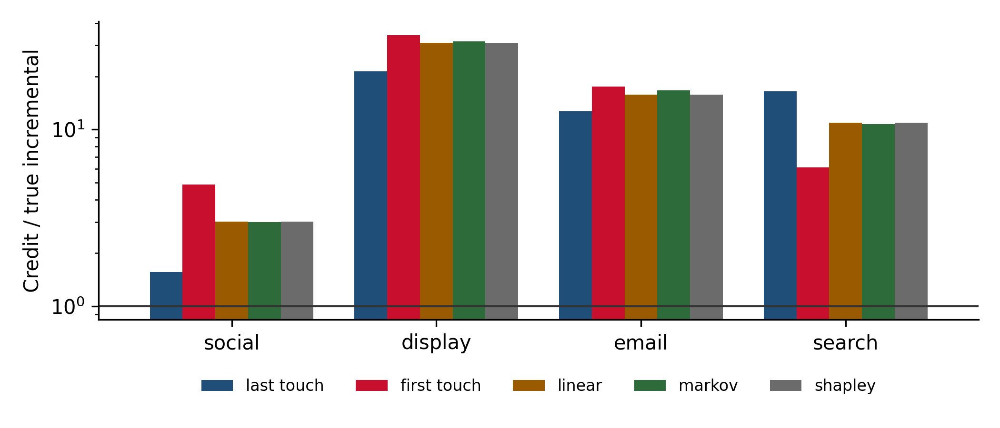

Chapter 13 Attribution and its limits
What multi-touch attribution can and cannot tell you, which questions it is still good for, and why no path-based model, rule-based or data-driven, answers the incrementality question.
13.1 What attribution does
Attribution takes the conversion paths users followed (the sequence of ad and channel touches before converting or not) and divides credit for conversions among the touched channels. Rule-based models use a fixed rule: last touch, first touch, linear, position-based, time decay. Data-driven models learn weights from the paths: Markov chain removal effects, Shapley values, and the proprietary models inside ad platforms and analytics tools.
All of them share one property that determines what they can do. They distribute observed conversions among the touches that preceded them. None of them compares what happened with what would have happened without a channel. In the vocabulary of Chapter 1, they produce attributed numbers, not incremental ones. The data-driven models are more sophisticated about the distribution, but they distribute the same pool.
13.2 Worked example: five attribution models against the truth
We simulate 200,000 users with different baseline purchase intent and four channels:
- Social prospecting reaches users at random and has the largest true effect (+1.0 percentage point).
- Display retargeting and email target users who already show intent; their true effects are small (+0.1 and +0.2 points).
- Search is reached mostly by high-intent users who look the brand up, with a moderate true effect (+0.4 points).
Each touch gets a time, so every user has an ordered path. Social tends to come early, search late.
import numpy as np, pandas as pd, itertools, math
from collections import Counter
rng = np.random.default_rng(13)
n = 200_000
CH = ["social", "display", "email", "search"]
intent = rng.beta(1, 25, n) # baseline conversion probability
exposed = {
"social": rng.random(n) < 0.30, # random reach
"display": rng.random(n) < np.clip(intent * 5 + 0.05, 0, 1), # selected on intent
"email": rng.random(n) < np.clip(intent * 4, 0, 1),
"search": rng.random(n) < np.clip(intent * 10, 0, 1),
}
lift = {"social": 0.010, "display": 0.001, "email": 0.002, "search": 0.004}
u = rng.random(n)
def converts(off=None):
p = intent + sum(lift[c] * exposed[c] for c in CH if c != off)
return u < p
y = converts()
true_incr = {c: y.sum() - converts(off=c).sum() for c in CH}
# Ordered paths from touch times: social early, search late
window = {"social": (0, .6), "display": (.3, .9), "email": (.2, 1), "search": (.6, 1)}
times = np.column_stack([np.where(exposed[c], rng.uniform(*window[c], n), np.inf) for c in CH])
order, n_touch = np.argsort(times, axis=1), np.isfinite(times).sum(1)
paths = [tuple(CH[j] for j in order[i, :n_touch[i]]) for i in range(n)]
print(f"Conversions: {y.sum():,}; conversions with at least one touch: {(y & (n_touch > 0)).sum():,}; "
f"truly incremental: {sum(true_incr.values()):,}")## Conversions: 8,696; conversions with at least one touch: 7,382; truly incremental: 959Now the rule-based models, then the two common data-driven ones. The Markov model treats paths as a chain of states from start to conversion or drop-out; a channel’s removal effect is how much the conversion probability falls if paths through it are redirected to drop-out. The Shapley model treats channels as players in a cooperative game whose value is the number of conversions achieved by each coalition of channels.
res = pd.DataFrame(index=CH)
res["true incremental"] = pd.Series(true_incr)
last, first, linear = (pd.Series(0.0, index=CH) for _ in range(3))
for p, conv in zip(paths, y):
if conv and p:
last[p[-1]] += 1; first[p[0]] += 1
for c in p: linear[c] += 1 / len(p)
res["last touch"], res["first touch"], res["linear"] = last, first, linear
# Markov chain: transition counts between start, channels, conversion and drop-out
states = ["start"] + CH + ["conv", "null"]
ix = {s: i for i, s in enumerate(states)}
T = np.zeros((len(states), len(states)))
for p, conv in zip(paths, y):
seq = ["start", *p, "conv" if conv else "null"]
for a, b in zip(seq[:-1], seq[1:]):
T[ix[a], ix[b]] += 1
def p_conversion(removed=None):
P = T.copy()
if removed: # redirect transitions into `removed` to drop-out
r = ix[removed]; P[:, ix["null"]] += P[:, r]; P[:, r] = 0
P = np.divide(P, P.sum(1, keepdims=True), out=np.zeros_like(P), where=P.sum(1, keepdims=True) > 0)
tr = [ix[s] for s in ["start"] + CH] # transient states
return np.linalg.solve(np.eye(len(tr)) - P[np.ix_(tr, tr)], P[np.ix_(tr, [ix["conv"]])])[0, 0]
removal = pd.Series({c: 1 - p_conversion(c) / p_conversion() for c in CH})
touched_conv = (y & (n_touch > 0)).sum()
res["markov"] = removal / removal.sum() * touched_conv
# Shapley: v(S) = conversions of users whose set of touched channels is contained in S
conv_by_set = Counter(frozenset(p) for p, conv in zip(paths, y) if conv and p)
v = lambda S: sum(k for s, k in conv_by_set.items() if s <= S)
shapley = {}
for c in CH:
others = [o for o in CH if o != c]
shapley[c] = sum(math.factorial(r) * math.factorial(len(CH) - r - 1) / math.factorial(len(CH))
* (v(frozenset(S) | {c}) - v(frozenset(S)))
for r in range(len(others) + 1) for S in itertools.combinations(others, r))
res["shapley"] = pd.Series(shapley)
print(res.round(0).astype(int).to_string())## true incremental last touch first touch linear markov shapley
## social 564 882 2758 1698 1682 1698
## display 51 1087 1750 1584 1613 1584
## email 68 861 1189 1075 1130 1075
## search 276 4552 1685 3025 2957 3025import matplotlib.pyplot as plt
ratio = res.drop(columns="true incremental").div(res["true incremental"], axis=0)
fig, ax = plt.subplots(figsize=(7, 3))
ratio.plot.bar(ax=ax, width=0.8, rot=0)
ax.axhline(1, color="#333", lw=1); ax.set_yscale("log")
ax.set_ylabel("Credit / true incremental")
ax.legend(fontsize=8, ncol=5, loc="upper center", bbox_to_anchor=(0.5, -0.15))
plt.tight_layout()
plt.show()
Figure 13.1: Credit per channel under each model, as a multiple of the channel’s true incremental conversions. A value of 1 would be correct.
13.3 What the example shows
Every model hands out far more credit than there is incrementality. All five distribute the conversions of touched users, around seven and a half thousand, while fewer than a thousand were caused by the advertising. Most of what attribution credits would have happened anyway. Using attributed conversions to judge whether channels pay for themselves will overstate returns across the board.
Every model gets the ranking wrong. The channel that truly drives the most incremental conversions is social. Last touch ranks it third. The linear, Markov and Shapley models move it up to second, but all of them still put search first, because high-intent users who were going to convert anyway search for the brand right before converting. Display and email, with tiny true effects, receive credit worth fifteen to thirty times what they deliver, because they target people who are already converting.
Data-driven is not the same as causal. The Markov and Shapley models are more defensible than last touch, but they learn from the same paths, and the paths are shaped by targeting. A channel aimed at high-intent users will look valuable in any model that learns from who converts after seeing it.
Shapley here is exactly linear attribution. With the common coalition definition used above (a coalition is credited with the conversions of users whose touches fall within it), the Shapley value splits each conversion equally among the channels in its path. That is a known result, and it means a “game theory” model can be simpler than it sounds. Other value functions give different answers, but none of them introduces a counterfactual.
Replacing last-touch with a data-driven model and treating the problem as solved. Data-driven attribution reduces the most obvious biases of rule-based models, but it remains a correlational allocation of observed conversions. It does not measure incrementality, and it inherits whatever selection the targeting creates.
13.4 What attribution is still good for
Attribution is the wrong tool for budget decisions between channels. It is still useful for questions where the selection bias is roughly constant across the things being compared:
- Within-channel optimization: comparing campaigns, ad sets, keywords or creatives inside one channel with similar targeting.
- Journey analysis: which channels typically appear early and late, how long paths are, where users drop off.
- Fast operational signals: daily monitoring of trends and anomalies, ahead of slower methods.
- Feeding models: path data can inform priors on how channels interact, as long as nobody reads the credit as incremental.
When attribution numbers are reported to decision makers, convert them with an incrementality factor from an experiment (Chapter 8) wherever one exists, and say clearly when one does not.
13.6 Checklist
- Is the attribution output being used to compare channels or set budgets? If so, stop and look for incrementality evidence.
- Are attributed conversions labeled as attributed in every report, never as incremental?
- For each channel, is its targeting correlated with existing intent (retargeting, CRM, branded search)? Expect over-credit.
- Where an incrementality factor exists, is it applied, with its date and conditions?
- How much of the journey is invisible because of consent, devices or platforms, and which channels does that hurt?
13.7 Further reading
- How to game attribution models (Admend, archived).
- Markov chain attribution: the
ChannelAttributionpackage and the tutorials. - Shapley value attribution:
shap/shapiqfor Shapley values in machine learning more broadly. - The
mtaPython package for further model variants.
Full links are in Appendix A.